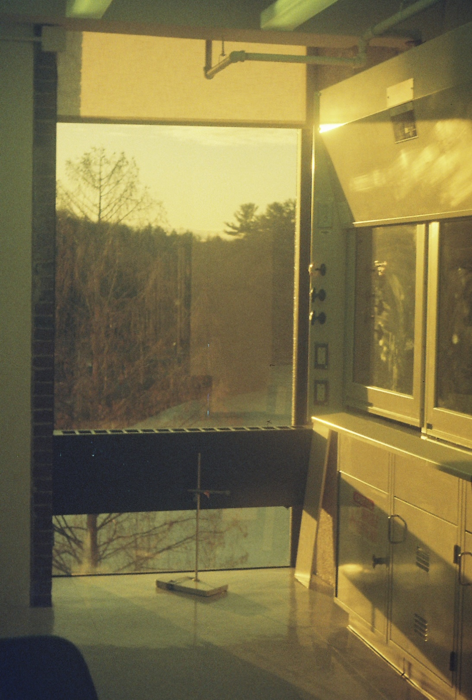

I have spent my first two years at Smith in the Biophysics lab of Candice Etson, where we use single-molecule techniques to investiate DNA-Protien interactions. My work has focused on constructing a Magnetic Tweezers appartus.
glomp glomp glomp

Etsonlab's fume hood during golden hour.